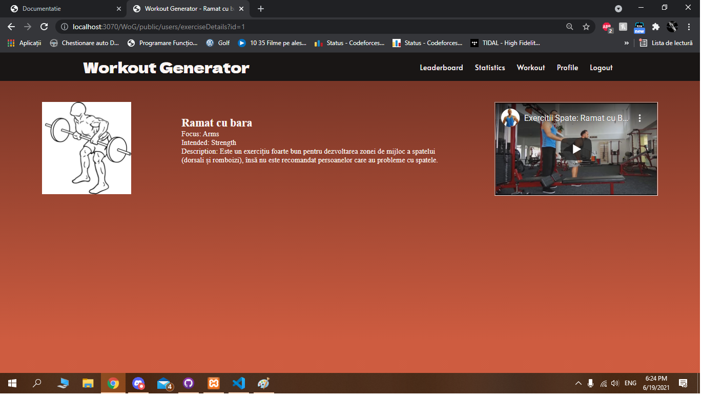
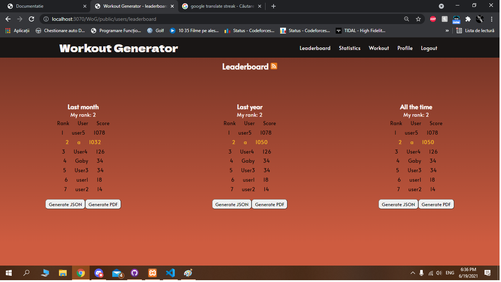

Ghid pentru folosirea site-ului
Pagina principala
In momentul in care utilizatorul intra pe site, acesta este intampinat de pagina principala ce afiseaza un meniu in partea de sus, un motto specific in partea stanga. Meniul prezinta in partea stanga un buton cu logo-ul nostru. prin apasarea lui, utilizatorul este adus la pagina principala. In partea dreapta, se afla 2 butoane ce duc utilizatorul spre formularele de logare si inregistrare de pe site.
Pagina de logare

In momentul in care utilizatorul apasa butonul "Login" aflat in partea dreapta a meniului, acesta este redirectionat spre pagina de logare, pentru completarea sunt necesare numele de utilizator si parola pentru logare.
Pagina de inregistrare

In momentul in care utilizatorul acceseaza link-ul spre pagina de inregistrare aflat in partea dreapta a meniului, acesta este redirectionat spre pagina unde sunt necesare adresa de email cat si alte date cu caracter personal(inaltime, greutate, varsta, numele - ce se vor gasi pe pagina principala in vecinatatea butonului de generare) in vederea inregistrarii pe site.
Pentru ca formularul sa fie corect, numele trebuie sa fie unul real si parola trebuie sa contina minim 4 caractere, o cifra, o litera mare si o litera mica.
Logged in page

Dupa ce utilizatorul s-a logat, acesta este intampinat de o noua fereastra in partea dreapta ce ii permite sa vada ce date sunt in profilul sau actual dar si doua butoane.
Butonul de "Generate" trimite utilizatorul spre un formular unde iti poate crea singur un antrenament
Butonul de "Surprise me!" trimite utilizatorul spre un antrenament generat automat, de intensitate medie, calculat in functie de antrenamentele sale din trecut.
Error 404 page

Daca utilizatorul intra pe o pagina ce nu se regaseste pe site, acesta este intampinat de pagina de eroare 404. Am implemetat pe aceasta pagina un mic joc de "Workout" similar cu jocul clasic cu dinozaurul de pe Chrome (aici scopul este de asemenea, sa apesi "spacebar" pentru a aduna puncte).
Pagina Generare

La pagina de generare, utilizatorul este intampiat de un formular unde trebuie inroduse niste preferinte in vederea generarii unui program de antrenament. Dupa ce este realizat acest pas, algoritmul genereaza un antrenament in mod nedeterminist.
Pagina Workout

Pagina de workout ofera utilizatorului un tabel unde poate sa isi acceseze exercitiile ce nu sunt terminate si sa vada antrenamentul curent. De asemenea, cand un exercitiu este terminat prin bifarea checkbox-ului si confirmarea cu "->", utilizatorul primeste un punctaj ce se adauga la scor pentru clasament.
Pagina Profile

Pagina de profil prezinta utilizatorului un formular unde ii sunt incarcate datele trimise in momentul inregistrarii. Acest formular ofera posibiltatea de a modifica acele date intr-un mod simplu si rapid. Prin apasarea pe butonul "Update Profile" input-urile devin enabled si pot fi modificate.
Pagina Detalii
Daca utilizatorul se afla pe pagina de workout, si doreste sa afle mai multe detalii despre un anumit exercitiu, acesta poate da click pe numele acelui antrenament si este dus pe pagina unde sunt prezentate detalii despre acel antrenament, cat si un videoclip.
Pagina Statistica
In meniul din partea de sus a paginii, utilizatorul gaseste butonul "Statistics" ce il trimite pe pagina de statistica unde gaseste grafice si valori reprezentand informatiile despre activitatea sa pe site.
Primul grafic arata numarul de puncte adunate pe luna.
Al doilea grafic arata ce mase musculare ai antrenat pana in acest moment si de cate ori.
Al treilea grafic arata ce tipuri de exercitii ai avut pana acuma si numarul acestora.
Graficul numarul 4 arata numarul de exercitii realizate in medie in fiecare zi a saptamanii.
Ultimul grafic arata cate antrenamente de o anumita intesitate ai facut pana acuma.
Cele 3 randuri de sub grafice arata: cea mai lunga serie de zile consecutive in care ai avut activitate, cate antrenamente ai in medie pe saptamana, si cate antrenamente ai in medie pe luna.
Pagina Leaderboard
In meniul din partea de sus a paginii, utilizatorul gaseste putonul "Leaderboard" ce il trimite pe pagina de leaderboard unde gaseste clasamentul cu utilizatorii de pe site, si progresul lor. Aici utilizatorul curent este afisat cu culoarea galbena.
Aici utilizatorul poate accesa si descarca clasamentul in format JSON si PDF, si il poate avea tip RSS.